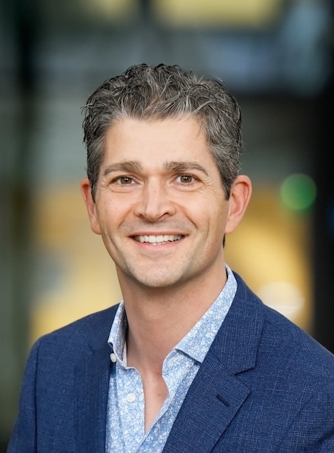

|  | Tom Oomen |
News
Max van Meer will defend his thesis on September 9, 2025
Max van Haren will defend his thesis on September 3, 2025
Johan will defend his thesis on June 18, 2025
I will give an invited lecture at the Nationaal congres Autonomous Systems 2025, Drachten, April 2, 2025
I will present a plenary at the 44th Benelux Meeting on Systems and Control, Egmond aan Zee, March 18, 2025
Koen will defend his thesis on October 4, 2024
Special lecture at the 10th Nagamori award ceremony in Kyoto, Japan on September 9, 2024, and a poster presentation
Paul will defend his thesis on September 18, 2024
Maurice successfully defended his thesis on July 3, 2024!
Leontine successfully defended her thesis on June 19, 2024!
Inaugural lecture on March 14, 16.00 at Eindhoven University of Technology. The lecture is public and anyone is free to attend. The booklet will become available soon!
Plenary talk at the 14th UKACC International Conference on Control, Winchester, April 10-12, 2024
Plenary presentation at the 23rd International Conference on Control, Automation, and Systems (ICCAS 2023), in Yeosu, Korea, October 20, 2023
Nic Dirkx will defend his PhD thesis on October 6, 2023!
Overview of our research on fault detection, isolation, predictive maintenance, and control reconfiguration, see movie
The First JSPS-NWO Seminar Research Network on Learning in Machines was a huge success, organised jointly by The University and Tokyo and our group
Tom Bloemers will defend his PhD thesis on March 18!
Noud Mooren will defend his thesis on May 12, 2022!
Video on our motion control tuning course for industry!
Nard Strijbosch will defend his PhD thesis on March 18!
Exciting PhD opportunity in our group!
Exciting Postdoc opportunity in our group!
Exciting PhD opportunity to work with us at TU Delft!
interview in Mechatronica & Machinebouw
very happy to have received the Grand Nagamori Award
About
My team and I develop methods to control real machines to the limits of performance by learning from data. Based in the high-tech hotspot Eindhoven, our key application domain involves the development of advanced motion control solutions for precision mechatronics. Driven by the challenges occurring in future precision mechatronics, our research focusses on fundamental issues arising in learning to control complex dynamical systems from data with robustness guarantees. As such, it is primarily positioned in the field of system identification and control, intersecting with machine learning, artificial intelligence, and mechatronics. Applications are broadly addressed through collaborations with many companies and institutions in mechatronics, ranging from semiconductor equipment and printing to space and astronomy. In addition, we enjoy many fruitful collaborations with domain experts in the health, energy, and mobility areas.
More information: Inaugural booklet, “Learning in Machines” video, “Learning in Machines” magazine article, Advanced Motion Control research article, Fault detection/predictive maintenance movie, an impression of our post-academic course on motion control tuning.
Bio
Tom Oomen is full professor with the Department of Mechanical Engineering at the Eindhoven University of Technology. He is also a part-time full professor with the Delft University of Technology. He received the M.Sc. degree (cum laude) and Ph.D. degree from the Eindhoven University of Technology, Eindhoven, The Netherlands. He held visiting positions at KTH, Stockholm, Sweden, and at The University of Newcastle, Australia. He is a recipient of the 7th Grand Nagamori Award, the Corus Young Talent Graduation Award, the IFAC 2019 TC 4.2 Mechatronics Young Research Award, the 2015 IEEE Transactions on Control Systems Technology Outstanding Paper Award, the 2017 IFAC Mechatronics Best Paper Award, the 2019 IEEJ Journal of Industry Applications Best Paper Award, and recipient of a Veni and Vidi personal grant. He is currently a Senior Editor of IEEE Control Systems Letters (L-CSS) and Co-Editor-in-Chief of IFAC Mechatronics, and he has served on the editorial board of IEEE Transactions on Control Systems Technology. He has also been vice-chair for IFAC TC 4.2 and a member of the Eindhoven Young Academy of Engineering. His research interests are in the field of data-driven modeling, learning, and control, with applications in precision mechatronics.
For a more detailed CV see detailed CV or email me for an even more detailed one.
Contact
Tel: +31 40 247 8332
Email: T.A.E.Oomen (at) tue.nl
Postal address:
Please do not send anything to my university address: it will not be delivered. Instead, in case you want to send me something through regular mail, please contact me for the appropriate address.